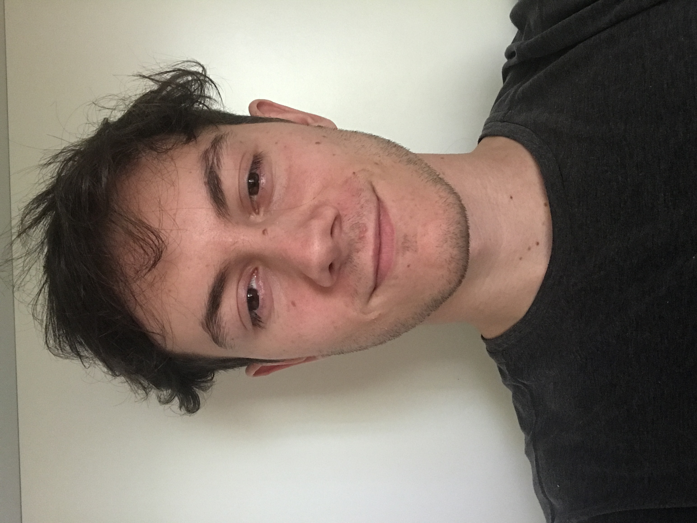

Il mio team
- Andrea T.
- Programmatore web

- Tomasello A.
- Mobile app developer
- 
- Andrew Tomas
- Project manager

- Amato Andresello
- Digital Marketer
Programmazione web e mobile, insieme al marketing per far conoscere ciò che creo
Applicazioni mobile ibride Ios e Android con React Native. Questo framework riduce del 50% i tempi di sviluppo
Creo siti web statici e responsive grazie a html e css. Per applicazioni web dinamiche uso React.
L'utilizzo di Facebook, Instagram e Google Ads mi permette di condividere velocemente al mondo le creazioni migliori
La gestione dei social media mi permette di creare un rapporto unico con le persone
Quando inizio un progetto, seguo questi step
Avere un obiettivo fisso e chiaro in testa mi permette di raggiungerlo in modo ottimale
Scelto l'obiettivo, bisogna capire quali sono gli strumenti e le modalità per procedere alla risoluzione del problema
Quando è tutto pronto, mi concentro sullo sviluppo vero e proprio del progetto in questione
Fare qualcosa è meglio di niente, ma farla bene è fondamentale. Il focus della parte finale è sui dettagli